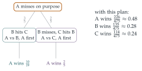

Bread roll throwing duels at the Drones’ Club are governed by a strict etiquette. The two duellists throw alternately until one is hit, when the other is declared the winner. If Percy has probability \(p > 0\) of hitting his target and Rodney has probability \(r > 0\) of hitting his, show that, if Percy throws first, the probability that he beats Rodney is \[\frac{p}{p + r - pr}.\] Algernon, Bertie and Cuthbert decide to have a three sided duel in which they throw in order A, B, C, A, B, C, … except that anyone who is hit must leave the game. Cuthbert always hits his target, Bertie hits his target with probability \(\frac35\) and Algernon hits his target with probability \(\frac25\). Bertie and Cuthbert will always aim at each other if they are both still in the duel. Otherwise they aim at Algernon. With his first shot Algernon may aim at either Bertie or Cuthbert or deliberately miss both. Faced with only one opponent Algernon will aim at him. What are Algernon’s chances of winning if he:
hits Cuthbert with his first shot?
hits Bertie with his first shot?
misses with his first shot?
Advise Algernon as to his best plan and show that, if he uses this plan, his probability of winning is \(226/475\).
The hook
Three people fight a duel with bread rolls. Cuthbert never misses, Bertie hits three times in five, and Algernon, the worst shot, only two times in five. Algernon throws first. Whom should he aim at? The surprising answer: nobody. He should throw his roll deliberately wide.
The reason is strategic. While all three are in the game, Bertie and Cuthbert, the two dangerous throwers, aim at each other. If Algernon removes one of them, the survivor turns on him. By missing, he lets them fight it out, and then gets the first throw against whoever survives. In fact, with the best plan the worst shot becomes the most likely to win. This “truel” is a favourite example in game theory of how weakness can be an advantage.
Before you start
In a two-person duel, Percy throws first. Either he hits at once, or both miss and the situation repeats exactly. Write an equation for Percy’s probability of winning.
Let \(P\) be Percy’s probability of winning. He hits at once with probability \(p\); otherwise (probability \(1 - p\)) Rodney throws, and misses with probability \(1 - r\), returning to the start. So \(P = p + (1 - p)(1 - r)P\).
Working it through
Stage 1 The duel
Solving, \(P\bigl(1 - (1 - p)(1 - r)\bigr) = p\), and \(1 - (1 - p)(1 - r) = p + r - pr\), so \[P = \frac{p}{p + r - pr}. \qed\] For Algernon (\(p = \frac25\)) against Bertie (\(r = \frac35\)), with Algernon throwing first, this is \(\frac{2/5}{2/5 + 3/5 - 6/25} = \frac{10}{19}\); with Bertie throwing first, Algernon wins with probability \(\bigl(1 - \frac35\bigr)\cdot\frac{10}{19} = \frac{4}{19}\).
Stage 2 Algernon’s three options
In each case, who is left, and who throws next?
Algernon hits Cuthbert. Bertie throws next, at Algernon. Algernon wins the duel with Bertie throwing first: probability \(\frac{4}{19}\).
Algernon hits Bertie. Cuthbert throws next, at Algernon, and never misses. Algernon’s chance is \(0\).
Algernon misses. Bertie throws at Cuthbert. With probability \(\frac35\) he hits, leaving Algernon and Bertie with Algernon to throw: Algernon wins with probability \(\frac{10}{19}\). With probability \(\frac25\) Bertie misses, Cuthbert hits Bertie, and Algernon faces Cuthbert with one throw: he wins only if he hits, probability \(\frac25\). Altogether, \[\tfrac35\cdot\tfrac{10}{19} + \tfrac25\cdot\tfrac25 = \tfrac{6}{19} + \tfrac{4}{25} = \tfrac{150 + 76}{475} = \tfrac{226}{475} \approx 0.476.\]
Stage 3 Advice
If Algernon aims at Cuthbert, he might hit (probability \(\frac25\)) or miss. What is his overall chance? Compare with deliberately missing.
Aiming at Cuthbert gives \(\frac25\cdot\frac{4}{19} + \frac35\cdot\frac{226}{475} = \frac{200 + 678}{2375} = \frac{878}{2375} \approx 0.370\). Aiming at Bertie is worse still. Deliberately missing gives \(\frac{226}{475} \approx 0.476\), the best. So Algernon should throw wide, and then his probability of winning is \(\frac{226}{475}\).■

Looking back
Repeated situations give equations. The duel “starts again” after two misses, giving a linear equation for the winning probability.
Think about the opponents’ responses. Each of Algernon’s options changes what Bertie and Cuthbert do next.
Compare all options, including doing nothing. The best move was the one that looked worst.
What’s really going on
Strategy and game theory
The truel shows the central idea of game theory: the best action depends on how the other players will respond. Hitting Cuthbert, the most dangerous opponent, is the obvious move, but it changes the game in a way that hurts Algernon. In this question Bertie’s and Cuthbert’s strategies are fixed (they aim at each other); in a full game-theoretic analysis each player would choose their own strategy, knowing that the others are doing the same. Such analyses, starting with the work of John von Neumann and Oskar Morgenstern in 1944 and John Nash in 1950, now underpin economics, evolutionary biology and political science.
Strength as a weakness
Who wins the truel? With Algernon’s best plan, the probabilities are \(\frac{226}{475}\) for Algernon, \(\frac{135}{475}\) for Bertie and \(\frac{114}{475}\) for Cuthbert. The best shot is the least likely to survive, because everyone with a choice aims at him. The same pattern appears in elections with several candidates, in competition between firms, and in nature, where the strongest competitor can be the first target. Martin Shubik, who introduced truels into game theory in the 1950s, used them to ask whether the fittest necessarily survive.
The thinking skill
Before choosing an action, work out how it changes the situation for everyone else, and what they will do in response.
At university, this becomes backward induction in game theory: analyse the end of the game first, then work back to decide the best opening move.
Try this next
Bertie and Cuthbert. Verify that, with Algernon missing deliberately, Bertie wins with probability \(\frac{135}{475}\) and Cuthbert with \(\frac{114}{475}\).
A better shot. If Algernon hit with probability \(a\) instead of \(\frac25\), for which values of \(a\) is deliberately missing still his best first move?
Should Bertie aim at Cuthbert? Given that Algernon misses deliberately, is it in Bertie’s interest to aim at Cuthbert rather than at Algernon? (Assume Cuthbert’s behaviour is unchanged.)
A duel with a fixed number of throws. In a duel where each player has only two throws, find Percy’s probability of winning, and compare with the unlimited duel.
Further reading
D. Marc Kilgour & Steven Brams, “The truel”, Mathematics Magazine 70 (1997). An accessible survey of three-way duels.
Avinash Dixit & Barry Nalebuff, Thinking Strategically (Norton). Game theory for a general reader, including the truel.
Ken Binmore, Game Theory: A Very Short Introduction (Oxford University Press).